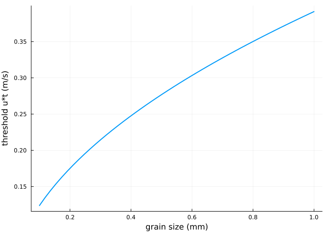
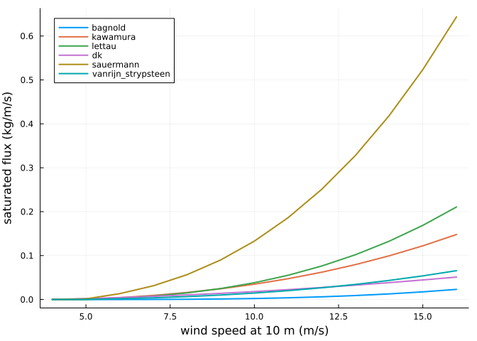

Transport formulations
Simon Frost
Overview
The saturated sediment flux is a function of the shear velocity u* and its threshold u*t. AeoLiS offers several classic formulations of it, of which Bagnold’s is the default (Bagnold 1937; van Rijn and Strypsteen 2020), and several ways to compute the grain velocity, including the grain-scale model of Durán et al. (2011). This vignette compares them by running the model on a long flat transect, where the flux downwind is saturated.
ENV["GKSwstype"] = "100"
using Aeolis
using PlotsShear velocity and its threshold
The wind at height z gives the shear velocity through the law of the wall with roughness length z0 (by default z0 = k, as in AeoLiS for backward compatibility). The threshold from grain size is Bagnold’s Aa sqrt((rhog - rhoa) / rhoa g d):
p = AeolisParameters()
ustar(u) = u * p.kappa / log(p.z / p.k)
uth(d) = p.Aa * sqrt((p.rhog - p.rhoa) / p.rhoa * p.g * d)
d = range(0.1e-3, 1.0e-3; length=50)
plot(1000 .* d, uth.(d); lw=2, xlabel="grain size (mm)", ylabel="threshold u*t (m/s)",
label="")
A grain of 0.3 mm starts to move at a wind speed (at 10 m) of
uth(0.3e-3) / p.kappa * log(p.z / p.k)4.816819474863292Saturated flux
A helper runs a 100 m flat transect for half an hour and returns the flux at its downwind end:
function saturated_flux(u; kwargs...)
x = collect(0.0:1.0:100.0)
q = AeolisParameters(; xgrid_file=x, bed_file=fill(2.0, length(x)),
wind_file=[0.0 u 270.0; 86400.0 u 270.0], grain_size=0.0003,
dt=300.0, tstop=1800.0, output_times=1800.0, output_vars=[:qs],
kwargs...)
sol = solve(AeolisProblem(q))
return transect(sol, :qs)[end - 1, 1, end]
end
saturated_flux(10.0)0.002300579301885339speeds = 4.0:1.0:16.0
plt = plot(; xlabel="wind speed at 10 m (m/s)", ylabel="saturated flux (kg/m/s)",
legend=:topleft)
for m in (:bagnold, :kawamura, :lettau, :dk, :sauermann, :vanrijn_strypsteen)
plot!(plt, speeds, [saturated_flux(u; method_transport=m) for u in speeds];
lw=2, label=String(m))
end
plt
The formulations agree on a threshold and a steep rise above it; they differ by factors of two or more at high wind speed, which is why the transport constant (Cb, Ck, Cl, Cdk) is often calibrated.
Grain velocity
The flux is the concentration times the grain velocity. With method_grainspeed = :windspeed grains move at the wind speed; :duran uses the grain-scale model of Duran et al., including the effect of bed slopes; :constant sets 1 m/s. Since the saturated concentration is the saturated flux divided by the grain velocity, the flux of the Bagnold formulation is the same for every grain velocity, but the concentration and the adaptation length are not:
function saturated_state(u, method)
x = collect(0.0:1.0:100.0)
q = AeolisParameters(; xgrid_file=x, bed_file=fill(2.0, length(x)),
wind_file=[0.0 u 270.0; 86400.0 u 270.0], grain_size=0.0003,
dt=300.0, tstop=1800.0, output_times=1800.0,
output_vars=[:qs, :Ct, :u], method_grainspeed=method)
sol = solve(AeolisProblem(q))
return (; method, flux=transect(sol, :qs)[end - 1, 1, end],
concentration=transect(sol, :Ct)[end - 1, 1, end],
grain_velocity=transect(sol, :u)[end - 1, 1, end])
end
[saturated_state(12.0, m) for m in (:windspeed, :duran, :constant)]3-element Vector{@NamedTuple{method::Symbol, flux::Float64, concentration::Float64, grain_velocity::Float64}}:
(method = :windspeed, flux = 0.0061217561693647045, concentration = 0.0005101463474470587, grain_velocity = 12.0)
(method = :duran, flux = 0.006123972245587834, concentration = 0.004424653136204793, grain_velocity = 1.3840570225671107)
(method = :constant, flux = 0.006123972245587831, concentration = 0.006123972245587831, grain_velocity = 1.0)References
Bagnold, R. A. 1937. “The Transport of Sand by Wind.” The Geographical Journal 89: 409–38. https://doi.org/10.2307/1786411.
Durán, O., P. Claudin, and B. Andreotti. 2011. “On Aeolian Transport: Grain-Scale Interactions, Dynamical Mechanisms and Scaling Laws.” Aeolian Research 3: 243–70. https://doi.org/10.1016/j.aeolia.2011.07.006.
van Rijn, L. C., and G. Strypsteen. 2020. “A Fully Predictive Model for Aeolian Sand Transport.” Coastal Engineering 156: 103600. https://doi.org/10.1016/j.coastaleng.2019.103600.